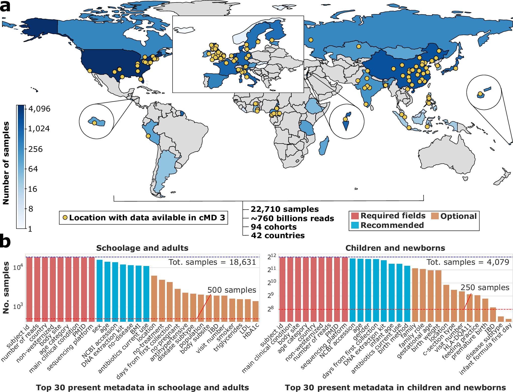
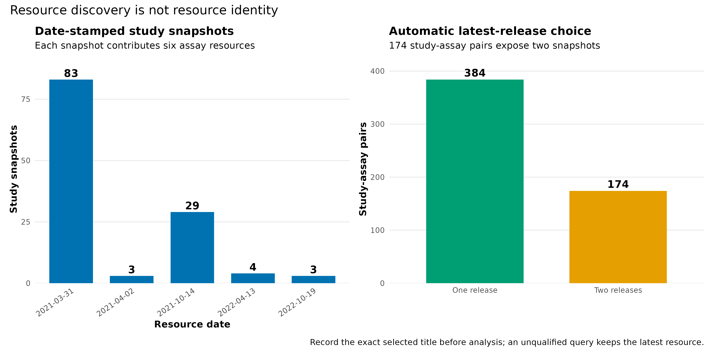
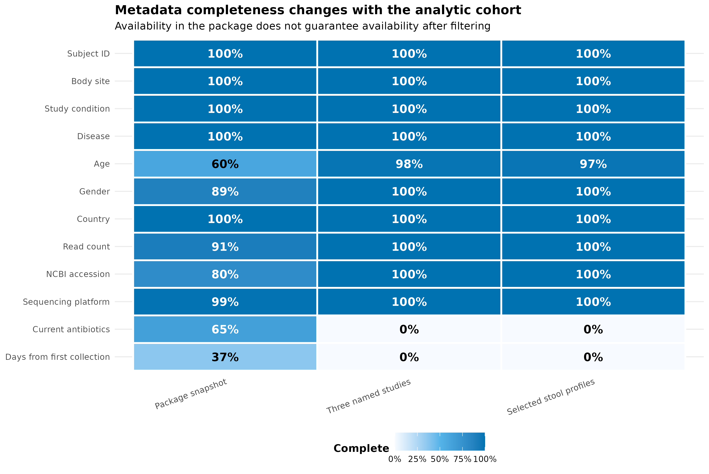
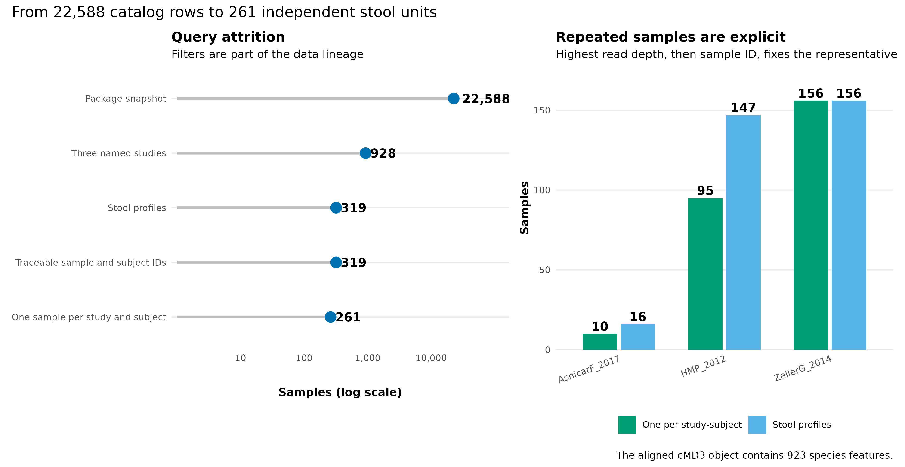
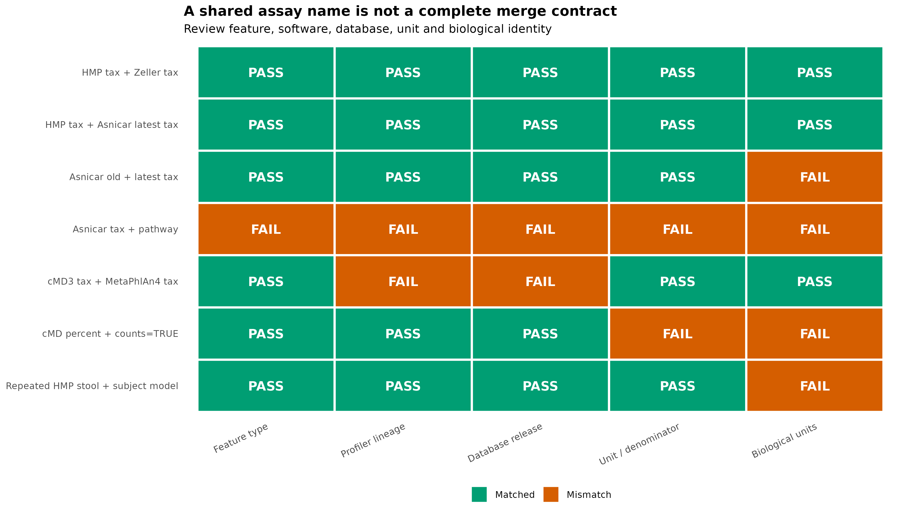

options(timeout = 600)
base_url <- "https://raw.githubusercontent.com/petemeng/metagenomics-best-practices/e219a2cd01609cc208a89e291cbd363ed7f2fbd8/"
files <- read.delim(paste0(base_url, "examples/26/files.tsv"))
for (i in seq_len(nrow(files))) {
path <- files$path[i]
dir.create(dirname(path), recursive = TRUE, showWarnings = FALSE)
if (!file.exists(path)) {
download.file(paste0(base_url, files$source[i]), path, mode = "wb")
}
}curatedMetagenomicData 深用与数据谱系卡片
学习目标：把“我从 cMD 下载了一张表”升级成可审核的数据合同：先发现并锁定资源，再筛选样本、限定独立观察单位、核对 feature 与单位，最后为每个 dataset × assay × release 保存数据谱系卡（data lineage card）。
真实数据：curatedMetagenomicData3.12.0 的完整sampleMetadata和资源标题目录，以及HMP_2012、ZellerG_2014、AsnicarF_2017的 MetaPhlAn 3 / HUMAnN 3 统一重处理结果 (Pasolli 等 2017年)。
推断边界：本章审核的是数据身份、可合并性与观察单位，不检验疾病关联；谱表是相对组成，不能替代绝对微生物负荷或原始 feature-level read counts。
提示统一重处理解决了什么，又没有解决什么
锁定具体资源 release，而不只记包名；合并前核对 profiler、数据库、单位与跨研究样本主键。
同一研究名，为什么会对应不同的数据表？
curatedMetagenomicData 3（cMD3）论文 Figure 1a 把公开 raw reads、bioBakery 3 统一处理、手工整理的样本元数据和 R/Bioconductor 访问接口放在同一条资源链上；Figure 1b 则展示不同元数据字段的可用程度 (Manghi 等 2026年)。它提醒我们：跨队列分析的起点不是一张 abundance matrix，而是“样本、谱表和处理版本能否彼此追溯”。

论文分析集合与本机软件快照必须分开记账。curatedMetagenomicData 3.12.0 的 sampleMetadata 恰有 22,588 个样本、93 个 study 和 141 个字段；论文在此基础上另加入尚未进入包快照的 HeQ_2017 122 个样本，因此论文集合是 22,710 个样本、94 个 cohorts (Manghi 等 2026年)。这两个数字都正确，但不能混写成同一个资源版本。
统一重处理解决了什么，又没有解决什么？
统一 profiler 和数据库减少生信流程差异，但不会消除原研究的采样、提取、人群和病例定义差异。相同 study 名在不同 release 中还可能包含不同样本与特征。因此数据主键至少应结合 study 与 sample；本例 177 个跨研究重复 sample IDs 正说明不能只按裸样本名合并。
选择独立观察单位后，再决定哪些协变量和 assay 可比较。缺失一整列测量不等于该变量为零，未进入某个资源的样本也不应被静默丢弃。跨队列推断需要在统一处理之外保留这些差异，才能判断异质性是研究对象变化还是分析流程变化。
下载本例数据与分析代码
数据与代码清单列出了本例的输入表、分析脚本和环境文件（约 1.5 MiB）。本清单不含原始 FASTQ 或大型数据库；是否需要它们取决于下文的分析起点。清单中的已计算结果仅供核对；读取结果表不等于重新运行统计模型或上游工具。
在新建文件夹中运行下面的 R 代码，下载完成后即可按正文中的相对路径读取文件。需要核验文件版本时，可使用带完整性检查的下载脚本。
先锁定输入、版本和算力边界
环境配置与完整运行说明
资源门槛
| Stage | CPU | RAM | Disk | Time |
|---|---|---|---|---|
| Read frozen catalog and metadata | 1 | <1 GB | <2 MB | seconds |
| Validate 923 × 261 merged profile | 1 | <1 GB | <5 MB | seconds |
| Four PDF/PNG/350-dpi TIFF figures | 1 | <2 GB | about 12 MB | <10 s |
Live returnSamples() retrieval |
1 | 2–8 GB | assay-dependent | minutes to hours |
冻结输入可以在普通笔记本复算。实时请求 gene_families 或许多研究时，下载量和内存会显著增加；先用 dryrun = TRUE 检查资源，再缩小 metadata 人群。
安装固定代际
if (!requireNamespace("BiocManager", quietly = TRUE)) {
install.packages("BiocManager")
}
BiocManager::install(version = "3.19")
BiocManager::install(c(
"curatedMetagenomicData",
"TreeSummarizedExperiment",
"SummarizedExperiment"
))
install.packages(c(
"ggplot2", "patchwork", "scales",
"digest", "jsonlite", "knitr"
))
stopifnot(
packageVersion("curatedMetagenomicData") == "3.12.0"
)一次性生成保存目录
Rscript scripts/prepare_article26_cmd_lineage.R \
--hmp-rda downloads/article25/2021-03-31.HMP_2012.relative_abundance.rda \
--zeller-rda downloads/article24/2021-03-31.ZellerG_2014.relative_abundance.rda \
--asnicar-rds data/small/12-cmd-asnicarf-2017-relative-abundance.rds \
--asnicar-pathway-rda data/small/20-cmd-pathway/AsnicarF_2017.pathway_abundance.rda \
--metaphlan4-profile data/small/15-metaphlan-frozen/species-profile.tsv \
--output-dir data/small/26-cmd-lineage \
--notice data/small/26-data-NOTICE.txt
(cd data/small/26-cmd-lineage && \
sha256sum -c file-checksums.sha256)冻结目录保存完整资源标题、21 个常用 metadata 字段、177 个重名 ID 的限定方式、319 个候选 stool profiles、261 个代表样本、合并谱和谱系卡。raw FASTQ 与大型 ExperimentHub cache 不进入 Git。
加载依赖、固定随机状态并内联作图函数
library(curatedMetagenomicData)
library(ggplot2)
library(patchwork)
library(scales)
library(knitr)
RNGkind("Mersenne-Twister", "Inversion", "Rejection")
set.seed(20260725)
pal_pub <- c(
blue = "#0072B2", orange = "#E69F00",
green = "#009E73", red = "#D55E00",
purple = "#7A5195", sky = "#56B4E9",
grey = "#7A7A7A", light = "#E8EEF3"
)
scale_color_pub <- function(...) {
ggplot2::scale_color_manual(values = pal_pub, ...)
}
scale_fill_pub <- function(...) {
ggplot2::scale_fill_manual(values = pal_pub, ...)
}
theme_pub <- function(base_size = 10) {
ggplot2::theme_minimal(base_size = base_size, base_family = "sans") +
ggplot2::theme(
panel.grid.minor = ggplot2::element_blank(),
panel.grid.major.x = ggplot2::element_blank(),
axis.title = ggplot2::element_text(face = "bold"),
legend.title = ggplot2::element_text(face = "bold"),
legend.position = "bottom",
strip.text = ggplot2::element_text(face = "bold"),
plot.title = ggplot2::element_text(face = "bold")
)
}
save_pub <- function(
plot, file_base,
width = 190, height = 120, dpi = 350
) {
ggplot2::ggsave(
paste0(file_base, ".pdf"), plot,
width = width, height = height, units = "mm",
device = grDevices::cairo_pdf, bg = "white"
)
ggplot2::ggsave(
paste0(file_base, ".png"), plot,
width = width, height = height, units = "mm",
dpi = dpi, bg = "white"
)
ggplot2::ggsave(
paste0(file_base, ".tiff"), plot,
width = width, height = height, units = "mm",
dpi = dpi, compression = "lzw", bg = "white"
)
invisible(plot)
}用 dryrun 发现资源，再锁定自动选择
dryrun 只读取包内标题，不下载 assay。下面把现场查询与冻结目录逐项对照：
input_dir <- "data/small/26-cmd-lineage"
resource_catalog <- read.delim(
file.path(input_dir, "resource-catalog.tsv"),
check.names = FALSE, quote = ""
)
query_resolution <- read.delim(
file.path(input_dir, "asnicar-query-resolution.tsv"),
check.names = FALSE, quote = ""
)
dryrun_titles <- curatedMetagenomicData(
"AsnicarF_2017", dryrun = TRUE
)
stopifnot(
nrow(resource_catalog) == 732L,
length(unique(resource_catalog$Study)) == 93L,
length(unique(resource_catalog$DataType)) == 6L,
all(table(resource_catalog$DataType) == 122L),
identical(
sort(dryrun_titles),
sort(query_resolution$ResourceTitle)
),
nrow(query_resolution) == 12L,
sum(query_resolution$LatestForStudyType) == 6L
)
query_resolution[, c(
"ResourceTitle", "LatestForStudyType",
"UnqualifiedQuerySelection"
)] ResourceTitle LatestForStudyType
1 2021-03-31.AsnicarF_2017.gene_families FALSE
2 2021-10-14.AsnicarF_2017.gene_families TRUE
3 2021-03-31.AsnicarF_2017.marker_abundance FALSE
4 2021-10-14.AsnicarF_2017.marker_abundance TRUE
5 2021-03-31.AsnicarF_2017.marker_presence FALSE
6 2021-10-14.AsnicarF_2017.marker_presence TRUE
7 2021-03-31.AsnicarF_2017.pathway_abundance FALSE
8 2021-10-14.AsnicarF_2017.pathway_abundance TRUE
9 2021-03-31.AsnicarF_2017.pathway_coverage FALSE
10 2021-10-14.AsnicarF_2017.pathway_coverage TRUE
11 2021-03-31.AsnicarF_2017.relative_abundance FALSE
12 2021-10-14.AsnicarF_2017.relative_abundance TRUE
UnqualifiedQuerySelection
1 Superseded
2 Selected
3 Superseded
4 Selected
5 Superseded
6 Selected
7 Superseded
8 Selected
9 Superseded
10 Selected
11 Superseded
12 SelectedAsnicarF_2017 有 2021-03-31 与 2021-10-14 两组、每组六种 assay。下面的实时取回会自动得到 2021-10-14 版本；正式分析还要把返回 list 的名字和文件 SHA-256 写入 manifest。
asnicar_tax <- curatedMetagenomicData(
"^AsnicarF_2017\\.relative_abundance$",
dryrun = FALSE,
counts = FALSE,
rownames = "long"
)
names(asnicar_tax)
# 2021-10-14.AsnicarF_2017.relative_abundance资源发布日期的审计图来自同一目录，而不是手工录入：
release_summary <- read.delim(
file.path(input_dir, "resource-release-summary.tsv"),
check.names = FALSE
)
release_totals <- aggregate(
Resources ~ ReleaseDate, release_summary, sum
)
release_totals$StudySnapshots <- release_totals$Resources / 6
pair_catalog <- unique(resource_catalog[, c(
"Study", "DataType", "ReleaseCountForStudyType"
)])
multiplicity <- as.data.frame(
table(pair_catalog$ReleaseCountForStudyType)
)
names(multiplicity) <- c("Releases", "StudyAssayPairs")
multiplicity$Label <- ifelse(
multiplicity$Releases == "1",
"One release", "Two releases"
)
stopifnot(
identical(release_totals$StudySnapshots, c(83, 3, 29, 4, 3)),
identical(as.integer(multiplicity$StudyAssayPairs), c(384L, 174L))
)
p_release <- ggplot(
release_totals,
aes(factor(ReleaseDate, levels = ReleaseDate), StudySnapshots)
) +
geom_col(fill = pal_pub[["blue"]], width = 0.72) +
geom_text(
aes(label = StudySnapshots),
vjust = -0.35, fontface = "bold"
) +
scale_y_continuous(expand = expansion(mult = c(0, 0.12))) +
labs(
title = "Date-stamped study snapshots",
subtitle = "Each snapshot contributes six assay resources",
x = "Resource date", y = "Study snapshots"
) +
theme_pub() +
theme(axis.text.x = element_text(angle = 35, hjust = 1))
p_multiplicity <- ggplot(
multiplicity,
aes(Label, StudyAssayPairs, fill = Label)
) +
geom_col(width = 0.68) +
geom_text(
aes(label = StudyAssayPairs),
vjust = -0.4, fontface = "bold"
) +
scale_fill_manual(values = c(
"One release" = pal_pub[["green"]],
"Two releases" = pal_pub[["orange"]]
)) +
scale_y_continuous(expand = expansion(mult = c(0, 0.12))) +
labs(
title = "Automatic latest-release choice",
subtitle = "174 study-assay pairs expose two snapshots",
x = NULL, y = "Study-assay pairs"
) +
theme_pub() +
theme(legend.position = "none")
p_resources <- p_release + p_multiplicity +
plot_annotation(
title = "Resource discovery is not resource identity",
caption = paste(
"Record the exact selected title before analysis;",
"an unqualified query keeps the latest resource."
)
)
save_pub(
p_resources,
"figures/26-resource-release-audit",
width = 267, height = 132
)
注意坑 1：把 dryrun 的 12 行当成 12 个独立 Asnicar assays
12 行是两个日期 × 六种 assay。实时不带日期取回只会选择每种 assay 的最新版本。资源计数必须先按 release、study 和 data type 拆开。

检查 metadata 完整性与跨 study 主键
资源标题是三元组，不只是 study 名
cMD 资源标题采用：
\[ \text{ResourceID}= (\text{release date},\ \text{study name},\ \text{data type}). \]
例如 2021-10-14.AsnicarF_2017.relative_abundance 包含发布日期、研究名和数据类型。curatedMetagenomicData(pattern, dryrun = TRUE) 返回所有匹配标题；dryrun = FALSE 遇到同一个 study × data type 的多个日期时，会自动保留最新日期。自动选择很方便，却意味着只记录查询字符串 AsnicarF_2017.relative_abundance 仍不足以复现：资源更新后，同一字符串可能解析到不同字节。
3.12.0 包中有 732 个标题，来自 122 个 date-stamped study snapshots；每个 snapshot 都有六种 data types：
relative_abundance：MetaPhlAn 3 分类相对丰度；marker_abundance与marker_presence：marker 层证据；gene_families：HUMAnN 3 gene-family profile；pathway_abundance与pathway_coverage：通路丰度和覆盖。
去掉日期后是 93 个 study × 6 个 assay，即 558 个 study-assay pairs。其中 174 个 pair 有两版资源。图 图 26.2 中的 732 不是 732 个独立研究，也不是 732 个独立样本集。
sample_catalog <- read.delim(
gzfile(file.path(input_dir, "sample-catalog.tsv.gz")),
check.names = FALSE, quote = ""
)
sample_id_collisions <- read.delim(
file.path(input_dir, "sample-id-collisions.tsv"),
check.names = FALSE, quote = ""
)
metadata_completeness <- read.delim(
file.path(input_dir, "metadata-completeness.tsv"),
check.names = FALSE, quote = ""
)
stopifnot(
nrow(sample_catalog) == 22588L,
length(unique(sample_catalog$study_name)) == 93L,
!anyDuplicated(sample_catalog$StudySampleKey),
nrow(sample_id_collisions) == 177L,
all(sample_id_collisions$Occurrences == 2L),
nrow(metadata_completeness) == 36L
)
head(sample_id_collisions[, c(
"SampleID", "Studies", "QualifiedIDs"
)]) SampleID Studies
1 MH0001 LeChatelierE_2013 | NielsenHB_2014
2 MH0002 LeChatelierE_2013 | NielsenHB_2014
3 MH0003 LeChatelierE_2013 | NielsenHB_2014
4 MH0004 LeChatelierE_2013 | NielsenHB_2014
5 MH0005 LeChatelierE_2013 | NielsenHB_2014
6 MH0006 LeChatelierE_2013 | NielsenHB_2014
QualifiedIDs
1 MH0001.LeChatelierE_2013 | MH0001.NielsenHB_2014
2 MH0002.LeChatelierE_2013 | MH0002.NielsenHB_2014
3 MH0003.LeChatelierE_2013 | MH0003.NielsenHB_2014
4 MH0004.LeChatelierE_2013 | MH0004.NielsenHB_2014
5 MH0005.LeChatelierE_2013 | MH0005.NielsenHB_2014
6 MH0006.LeChatelierE_2013 | MH0006.NielsenHB_2014metadata completeness 是“非缺失且非空”的描述量，不等于字段值正确，也不等于缺失可忽略。尤其不能把 antibiotics_current_use = NA 自动改成 no；缺失机制需要结合研究设计和原论文审计。
field_labels <- c(
subject_id = "Subject ID",
body_site = "Body site",
study_condition = "Study condition",
disease = "Disease",
age = "Age", gender = "Gender", country = "Country",
number_reads = "Read count",
NCBI_accession = "NCBI accession",
sequencing_platform = "Sequencing platform",
antibiotics_current_use = "Current antibiotics",
days_from_first_collection = "Days from first collection"
)
metadata_completeness$FieldLabel <- factor(
unname(field_labels[metadata_completeness$Field]),
levels = rev(unname(field_labels))
)
metadata_completeness$Context <- factor(
metadata_completeness$Context,
levels = c(
"Package snapshot",
"Three named studies",
"Selected stool profiles"
)
)
p_completeness <- ggplot(
metadata_completeness,
aes(Context, FieldLabel, fill = Completeness)
) +
geom_tile(color = "white", linewidth = 0.8) +
geom_text(
aes(label = percent(Completeness, accuracy = 1)),
color = ifelse(
metadata_completeness$Completeness >= 0.62,
"white", "black"
),
fontface = "bold"
) +
scale_fill_gradientn(
colours = c("#F7FBFF", pal_pub[["sky"]], pal_pub[["blue"]]),
limits = c(0, 1), labels = label_percent(accuracy = 1)
) +
labs(
title = "Metadata completeness changes with the analytic cohort",
subtitle = paste(
"Availability in the package does not guarantee",
"availability after filtering"
),
x = NULL, y = NULL, fill = "Complete"
) +
theme_pub() +
theme(axis.text.x = element_text(angle = 20, hjust = 1))
save_pub(
p_completeness,
"figures/26-metadata-completeness",
width = 239, height = 160
)升级 3：metadata 更新与 assay 字节分层保存
cMD 的 sample metadata 会持续改进，assay payload 与 metadata 不一定同步变化。建议保存三层证据：
- 原始 Hub 标题与 cache payload；
- 当次
sampleMetadata的必要字段快照； - 最终纳入样本及排除理由。
这样将来 metadata 修订时，可以区分“谱表变化”“临床注释变化”和“纳入标准变化”。
注意坑 2：只保存 study_name，不保存实际 resource title
study 名不会标识日期版本。正式结果至少记录完整 title、Hub ID、package version、retrieval date 和 checksum。
注意坑 3：sample_id 直接作为跨研究主键
本快照有 177 个跨 study 重名 ID。任何外部临床表、fold assignment 和预测结果都应使用 study_name::sample_id；只在 abundance 列名冲突后补后缀太晚。

把观察单位写进样本查询
sampleMetadata 先定义人群，再触碰 abundance
sampleMetadata 是 cMD 的“购物目录”：study_name 决定去哪些 study 取资源，sample_id 决定从资源中保留哪些列。推荐顺序是：
- 在 metadata 中写清纳入和排除标准；
- 检查关键协变量缺失和取值；
- 确定 subject、time point、household 等独立性结构；
- 最后调用
returnSamples()取回匹配的 assay。
这个顺序避免先下载大量矩阵，再用临时条件挑样本。图 图 26.3 还显示，metadata availability 必须在最终分析人群内重算；全包中某字段很完整，不代表你的病例子集里也完整。
重要sample_id 只在 study 内安全
3.12.0 快照中有 177 个 sample_id 同时出现在两个研究里，例如 MH0001 同时属于 LeChatelierE_2013 和 NielsenHB_2014。跨队列主键应写成 study_name::sample_id。returnSamples() 会在发生冲突时把 study 名追加到列名，但设计表、临床表和外部结果也必须使用同样的限定规则。
相同单位也可能没有相同 feature universe
三份 cMD3 taxonomic profiles 都是 percent，也都来自 MetaPhlAn 3 / CHOCOPhlAn 201901，经过物种行对齐后可以条件性合并。第 15 篇的 MOCK1 profile 同样是 percent，却来自 MetaPhlAn 4.2.5 与 mpa_vJan26_CHOCOPhlAnSGB_202605；它引入 SGB、不同 marker catalog 和不同分类命名，不能因为数值范围相同就直接追加到 cMD3 矩阵。
可合并性至少是五个布尔合同的交集：
\[ M = F \cap P \cap D \cap U \cap B, \]
其中 \(F\) 是 feature type 一致，\(P\) 是 profiler lineage 一致，\(D\) 是数据库 release 一致，\(U\) 是单位与分母一致，\(B\) 是 biological units 不重复。任何一项失败，都要分开建模、显式 harmonize，或从 raw reads 统一重处理。
示例保留 AsnicarF_2017、HMP_2012、ZellerG_2014 的 stool samples，并要求 NCBI_accession 与 subject_id 可追溯。HMP 与 Asnicar 含重复采样，所以在每个 study × subject 内按 number_reads 最大、再按 sample_id 字典序选择一个代表样本。
present <- function(x) {
!is.na(x) & nzchar(trimws(as.character(x)))
}
selected_studies <- c(
"AsnicarF_2017", "HMP_2012", "ZellerG_2014"
)
query_pool <- subset(
sample_catalog,
study_name %in% selected_studies &
body_site == "stool" &
present(NCBI_accession) &
present(subject_id)
)
query_pool$NumberReadsNumeric <- as.numeric(query_pool$number_reads)
read_sort <- query_pool$NumberReadsNumeric
read_sort[!is.finite(read_sort)] <- -1
query_pool <- query_pool[order(
match(query_pool$study_name, selected_studies),
query_pool$subject_id,
-read_sort,
query_pool$sample_id
), ]
subject_key <- paste(
query_pool$study_name,
query_pool$subject_id,
sep = "::"
)
query_pool$Representative <- !duplicated(subject_key)
sample_query <- query_pool[query_pool$Representative, ]
selected_metadata <- read.delim(
gzfile(file.path(
input_dir, "selected-sample-metadata.tsv.gz"
)),
check.names = FALSE, quote = ""
)
stopifnot(
nrow(query_pool) == 319L,
nrow(sample_query) == 261L,
identical(sample_query$sample_id, selected_metadata$sample_id),
identical(
as.integer(table(factor(
sample_query$study_name,
levels = selected_studies
))),
c(10L, 95L, 156L)
)
)
head(sample_query[, c(
"study_name", "sample_id", "subject_id",
"body_site", "NumberReadsNumeric", "NCBI_accession"
)]) study_name sample_id subject_id body_site NumberReadsNumeric
1 AsnicarF_2017 MV_FEI1_t1Q14 MV_FEI1 stool 27553455
2 AsnicarF_2017 MV_FEI2_t1Q14 MV_FEI2 stool 32197545
3 AsnicarF_2017 MV_FEI3_t1Q14 MV_FEI3 stool 32310216
5 AsnicarF_2017 MV_FEI4_t2Q15 MV_FEI4 stool 37677351
8 AsnicarF_2017 MV_FEI5_t3Q15 MV_FEI5 stool 57639595
9 AsnicarF_2017 MV_FEM1_t1Q14 MV_FEM1 stool 27277064
NCBI_accession
1 SRR4052021
2 SRR4052022
3 SRR4052033
5 SRR4052039
8 SRR4052042
9 SRR4052043实时取回时只需保留 study_name 和 sample_id，但建议把模型需要的协变量一起传入；它们会进入返回对象的 colData。
query_tse <- returnSamples(
sampleMetadata = sample_query,
dataType = "relative_abundance",
counts = FALSE,
rownames = "long"
)
query_tse
# TreeSummarizedExperiment: aligned species x selected samples本次已从三个 checksum-locked cMD3 资源真实构建同类对象并执行 mergeData()；渲染读取其表格化快照：
merged_profile <- read.delim(
gzfile(file.path(
input_dir,
"merged-species-relative-abundance.tsv.gz"
)),
check.names = FALSE, quote = ""
)
merged_contract <- read.delim(
file.path(input_dir, "merged-object-contract.tsv"),
check.names = FALSE, quote = ""
)
profile_sample_ids <- names(merged_profile)[-(1:2)]
profile_matrix <- data.matrix(
merged_profile[, profile_sample_ids, drop = FALSE]
)
stopifnot(
identical(dim(profile_matrix), c(923L, 261L)),
identical(profile_sample_ids, selected_metadata$sample_id),
!anyDuplicated(merged_profile$Lineage),
all(is.finite(profile_matrix)),
min(profile_matrix) >= 0,
min(colSums(profile_matrix)) > 98,
max(colSums(profile_matrix)) < 101
)
merged_contract Object Class Features
1 AsnicarF_2017 selected relative_abundance TreeSummarizedExperiment 298
2 HMP_2012 selected relative_abundance TreeSummarizedExperiment 740
3 ZellerG_2014 selected relative_abundance TreeSummarizedExperiment 652
4 Merged selected relative_abundance TreeSummarizedExperiment 923
Samples Assay Unit MinimumColumnSum MedianColumnSum
1 10 relative_abundance percent 99.88968 99.99546
2 95 relative_abundance percent 98.77602 99.99580
3 156 relative_abundance percent 98.33885 99.95464
4 261 relative_abundance percent 98.33885 99.98028
MaximumColumnSum
1 100.0000
2 100.0001
3 100.0001
4 100.0001原始 cMD3 树中没有匹配 tip 的 species lineages 会在构造 TreeSummarizedExperiment 时被丢弃，因此 HMP、Zeller 和 Asnicar 的实际对象分别有 740、652 和 298 个物种行；full join 后是 923 行。这个数字来自已锁定的 cMD3 taxonomy universe，不应外推成其他 MetaPhlAn release 的“物种总数”。
attrition <- read.delim(
file.path(input_dir, "query-attrition.tsv"),
check.names = FALSE
)
selection_audit <- read.delim(
gzfile(file.path(
input_dir, "sample-selection-audit.tsv.gz"
)),
check.names = FALSE
)
attrition$Step <- factor(
attrition$Step, levels = rev(attrition$Step)
)
p_attrition <- ggplot(attrition, aes(Samples, Step)) +
geom_segment(
aes(x = 1, xend = Samples, yend = Step),
color = "grey75", linewidth = 1.1
) +
geom_point(size = 4.2, color = pal_pub[["blue"]]) +
geom_text(
aes(label = comma(Samples)),
hjust = -0.18, fontface = "bold"
) +
scale_x_log10(
breaks = c(10, 100, 1000, 10000),
labels = label_comma(),
expand = expansion(mult = c(0.02, 0.2))
) +
labs(
title = "Query attrition",
subtitle = "Filters are part of the data lineage",
x = "Samples (log scale)", y = NULL
) +
theme_pub()
candidate_counts <- as.data.frame(
table(selection_audit$study_name)
)
names(candidate_counts) <- c("Study", "Samples")
candidate_counts$Stage <- "Stool profiles"
representative_counts <- as.data.frame(
table(selected_metadata$study_name)
)
names(representative_counts) <- c("Study", "Samples")
representative_counts$Stage <- "One per study-subject"
study_counts <- rbind(candidate_counts, representative_counts)
study_counts$Study <- factor(
study_counts$Study, levels = selected_studies
)
p_study <- ggplot(
study_counts,
aes(Study, Samples, fill = Stage)
) +
geom_col(
position = position_dodge(width = 0.72),
width = 0.65
) +
geom_text(
aes(label = Samples),
position = position_dodge(width = 0.72),
vjust = -0.35, fontface = "bold"
) +
scale_fill_manual(values = c(
"Stool profiles" = pal_pub[["sky"]],
"One per study-subject" = pal_pub[["green"]]
)) +
scale_y_continuous(expand = expansion(mult = c(0, 0.14))) +
labs(
title = "Repeated samples are explicit",
subtitle = paste(
"Highest read depth, then sample ID,",
"fixes the representative"
),
x = NULL, y = "Samples", fill = NULL
) +
theme_pub() +
theme(axis.text.x = element_text(angle = 20, hjust = 1))
p_query <- p_attrition + p_study +
plot_annotation(
title = "From 22,588 catalog rows to 261 independent stool units",
caption = "The aligned cMD3 object contains 923 species features."
)
save_pub(
p_query,
"figures/26-query-attrition",
width = 284, height = 147
)忠实保留 cMD3 的访问语义
以下行为与 cMD 3.12.0 接口一致：
dryrun = TRUE返回所有正则匹配的 date-stamped titles；dryrun = FALSE自动保留每个 study × data type 的最新日期；- taxonomy 返回
TreeSummarizedExperiment，function 返回SummarizedExperiment； returnSamples()以筛选后的 metadata 为入口，并保留自定义 metadata columns；mergeData()对 feature 做 full join，对缺失单元补 0；counts = TRUE以相对丰度和number_reads重建并四舍五入。
这些便利接口适合资源发现和对象组装，但不能替代研究级 provenance 审核。
升级 1：自动最新版必须转成固定标题与 checksum
AsnicarF_2017 的不带日期查询会自动从 2021-03-31 升到 2021-10-14。探索阶段可以接受自动选择，冻结分析时应同时保存：
- query pattern；
- 实际返回的完整 title；
- ExperimentHub ID；
- cache payload 或分析快照的 SHA-256；
- retrieval date 与 package version。
重复发布是同一批或高度重叠生物样本的不同资源快照，不能把旧版和新版纵向追加后当作样本量翻倍。
升级 5：MetaPhlAn 3 与 MetaPhlAn 4 只能明确 harmonize
cMD3 taxonomy 的已知 lineage 是 MetaPhlAn 3 / CHOCOPhlAn 201901；本系列上游使用 MetaPhlAn 4.2.5 / vJan26 SGB database。优先级从高到低是：
- 从 raw reads 用同一 profiler 与数据库统一重处理所有队列；
- 在共同、稳定、明确映射的层级建立 mapping，并报告丢失率与一对多关系；
- 分开分析，在 effect-size 层做 meta-analysis；
- 最差做法是删除版本 header 后按字符串 row name 直接合并。

在 mergeData() 前执行五项约定
returnSamples() 与 mergeData() 解决的问题不同
returnSamples(filtered_metadata, dataType) 适合从多个研究挑出一组具体样本。它会：
- 根据 metadata 中的
study_name查找资源； - 调用
curatedMetagenomicData()取得指定dataType； - 通过
mergeData()对齐 feature； - 只保留 metadata 中的
sample_id； - 用筛选后的 metadata 重建
colData，因此自行添加的协变量也能保留。
mergeData(resource_list) 则适合把已经取回的同一 data type 对象拼接起来。它只要求所有元素具有同一个 assayNames()，对 feature 做 full join，并把缺失单元填为 0。它不会检查 profiler 版本、数据库 release、单位或样本是否重复。所以函数运行成功只表示对象结构可以拼，不表示科学上可以直接比较。
数据谱系卡是 dataset × assay × release 级对象
每张谱系卡至少记录 12 个字段：
| Field | Question answered |
|---|---|
| Study | Which biological cohort? |
| Accession | Which project, sample or run IDs? |
| Raw reads available | Can the profile be regenerated? |
| Profile source | Which exact resource title or file? |
| Profiler | MetaPhlAn, HUMAnN or another tool? |
| Profiler version | Which software generation and patch? |
| Database release | Which taxonomy or functional universe? |
| Feature type | Species, SGB, gene family or pathway? |
| Unit | Percent, fraction, CPM or counts? |
| Normalization | Which denominator and transformation? |
| Original publication | Which biological study? |
| Reprocessed or author-provided | Who generated this profile and how? |
无法从资源中恢复的精确版本应写 not encoded in resource metadata，不能用“最新版”补空。cMD3 论文明确给出分类谱来自 MetaPhlAn 3、CHOCOPhlAn 201901，功能谱来自 HUMAnN 3 (Manghi 等 2026年; Beghini 等 2021年)；ExperimentHub 标题却不编码具体 patch version，因此谱系卡如实保留这一缺口。
下面是两个完整 study 对象的标准接口。只有当它们来自同一 profiler/database lineage、同一 rank 和同一单位时，才允许进入 mergeData()。
study_list <- curatedMetagenomicData(
paste0(
"^(HMP_2012|ZellerG_2014)\\.",
"relative_abundance$"
),
dryrun = FALSE,
counts = FALSE,
rownames = "long"
)
stopifnot(
length(unique(vapply(
study_list,
function(x) assayNames(x)[[1]],
character(1)
))) == 1L
)
merged_tse <- mergeData(study_list)真实谱系卡给出比 assayNames() 更严格的检查：
lineage_cards <- read.delim(
file.path(input_dir, "lineage-cards.tsv"),
check.names = FALSE, quote = ""
)
compatibility <- read.delim(
file.path(input_dir, "merge-compatibility.tsv"),
check.names = FALSE, quote = ""
)
required_lineage_fields <- c(
"Study", "Accession", "RawReadsAvailable",
"ProfileSource", "Profiler", "ProfilerVersion",
"DatabaseRelease", "FeatureType", "Unit",
"Normalization", "OriginalPublication",
"ReprocessedOrAuthorProvided", "ProfileFileSHA256"
)
stopifnot(
identical(names(lineage_cards), required_lineage_fields),
nrow(lineage_cards) == 5L,
all(nchar(lineage_cards$ProfileFileSHA256) == 64L),
nrow(compatibility) == 7L
)
kable(compatibility[, c(
"Comparison", "Verdict", "RequiredAction"
)])| Comparison | Verdict | RequiredAction |
|---|---|---|
| HMP tax + Zeller tax | Conditional merge | Align species IDs, preserve study labels, and model study |
| HMP tax + Asnicar latest tax | Conditional merge | Align species IDs, preserve study labels, and model study |
| Asnicar old + latest tax | Choose one release | Never concatenate duplicate snapshots of the same samples |
| Asnicar tax + pathway | Separate assays | Keep taxonomy and function in separate assay spaces |
| cMD3 tax + MetaPhlAn4 tax | Reprocess or harmonize | Do not equate MetaPhlAn3 species with MetaPhlAn4 SGB features |
| cMD percent + counts=TRUE | Derived, not independent | Record the reconstruction; do not call values observed taxon reads |
| Repeated HMP stool + subject model | Deduplicate or model subject | Use one sample per study x subject or a repeated-measures model |
完整卡片很宽，审核单个对象时可转成长表。这里查看 HMP taxonomy card：
hmp_card <- lineage_cards[
lineage_cards$Study == "HMP_2012",
]
hmp_long <- data.frame(
Field = setdiff(names(hmp_card), "Study"),
Value = unname(unlist(
hmp_card[, setdiff(names(hmp_card), "Study"), drop = FALSE],
use.names = FALSE
)),
check.names = FALSE
)
kable(hmp_long)| Field | Value |
|---|---|
| Accession | 1671 SRA run tokens across 748 sample records |
| RawReadsAvailable | Yes; NCBI_accession populated for 748/748 sample records |
| ProfileSource | 2021-03-31.HMP_2012.relative_abundance |
| Profiler | MetaPhlAn |
| ProfilerVersion | 3.x; exact patch not encoded in resource title |
| DatabaseRelease | CHOCOPhlAn 201901 |
| FeatureType | Taxonomic lineage; species rows used |
| Unit | Relative abundance percent |
| Normalization | MetaPhlAn compositional profile; align one rank before analysis |
| OriginalPublication | PMID 22699609; DOI 10.1038/nature11234 |
| ReprocessedOrAuthorProvided | Uniform cMD3 / bioBakery3 reprocessing of public raw reads |
| ProfileFileSHA256 | f42713b0d59d15f65172ead2375c2ea2c1b6309b44cb2b29231edb190e56ab23 |
criterion_columns <- c(
"SameFeatureType", "SameProfilerLineage",
"SameDatabaseRelease", "SameUnitAndDenominator",
"DisjointBiologicalUnits"
)
criterion_labels <- c(
SameFeatureType = "Feature type",
SameProfilerLineage = "Profiler lineage",
SameDatabaseRelease = "Database release",
SameUnitAndDenominator = "Unit / denominator",
DisjointBiologicalUnits = "Biological units"
)
compatibility_long <- do.call(
rbind,
lapply(seq_len(nrow(compatibility)), function(i) {
data.frame(
Comparison = compatibility$Comparison[[i]],
Criterion = criterion_columns,
Match = as.logical(unlist(
compatibility[i, criterion_columns, drop = FALSE],
use.names = FALSE
))
)
})
)
compatibility_long$Criterion <- factor(
unname(criterion_labels[compatibility_long$Criterion]),
levels = unname(criterion_labels)
)
compatibility_long$Comparison <- factor(
compatibility_long$Comparison,
levels = rev(compatibility$Comparison)
)
compatibility_long$Status <- ifelse(
compatibility_long$Match, "Matched", "Mismatch"
)
compatibility_long$Mark <- ifelse(
compatibility_long$Match, "PASS", "FAIL"
)
p_compatibility <- ggplot(
compatibility_long,
aes(Criterion, Comparison, fill = Status)
) +
geom_tile(color = "white", linewidth = 0.9) +
geom_text(
aes(label = Mark),
color = "white", fontface = "bold"
) +
scale_fill_manual(values = c(
"Matched" = pal_pub[["green"]],
"Mismatch" = pal_pub[["red"]]
)) +
labs(
title = "A shared assay name is not a complete merge contract",
subtitle = paste(
"Review feature, software, database, unit",
"and biological identity"
),
x = NULL, y = NULL, fill = NULL
) +
theme_pub() +
theme(
axis.text.x = element_text(angle = 25, hjust = 1),
panel.grid = element_blank()
)
save_pub(
p_compatibility,
"figures/26-lineage-compatibility",
width = 274, height = 157
)升级 2：mergeData() 成功后还要做 lineage gate
mergeData() 的结构检查核心是 assay 名一致；它不会读取谱系卡。对两个都叫 relative_abundance 的对象，至少再断言 profiler generation、database release、rank、unit/denominator 与 sample identity。不同 cMD3 studies 的 taxonomic profiles 可在这些条件满足后对齐，但模型仍需保留 study_name，不能把 batch/study effect 交给矩阵拼接自动消失。
同一 pipeline 内，某 feature 在一个 study 没有行时补 0 可表示该 study 未报告该 feature；跨数据库时，缺行也可能表示 feature 不在旧 catalog。后者不能安全地补成“生物学未检出”。
注意坑 4：mergeData 没报错就认为可比较
相同 assay name 只通过对象结构门槛。MetaPhlAn 3 与 4、taxonomy 与 pathway、percent 与 pseudo-count、旧版与新版重复样本都可能“能拼但不能解释”。
注意坑 5：把全部 sample rows 当成独立受试者
三队列有 319 个 stool profiles，却只有 261 个 study-subject units。应预先选固定 time point/代表样本，或在模型中加入 subject random effect、GEE 或 blocked permutation。

把 counts = TRUE 限定为重建值
counts = TRUE 不是找回原始 taxon reads
对 relative_abundance，cMD 的便利转换是：
\[ \widetilde{c}_{ij}= \operatorname{round} \left(\frac{a_{ij}}{100}\times N_j\right), \]
其中 \(a_{ij}\) 是 MetaPhlAn percent，\(N_j\) 是 metadata 中的 total reads。\(\widetilde{c}_{ij}\) 是从组成和总 reads 重建的 pseudo-count；它没有恢复 reads-to-marker alignment，也不是绝对菌量。AsnicarF_2017 的 24 个样本中，进入分类树对象的物种行总和为 94.65166%–100.00003%；未匹配 tree tips 的行被移除，再叠加 rounding，pseudo-count 总和便可能明显低于 number_reads。因此 Methods 必须把它称为 reconstructed counts。
counts_boundary <- read.delim(
file.path(input_dir, "counts-boundary.tsv"),
check.names = FALSE
)
stopifnot(
nrow(counts_boundary) == 24L,
all(!counts_boundary$ExactRawFeatureCountsRecovered),
any(counts_boundary$PseudoCountMinusNumberReads != 0),
all(counts_boundary$RelativeAbundanceSumPct > 94),
all(counts_boundary$RelativeAbundanceSumPct <= 100.001)
)
head(counts_boundary[, c(
"SampleID", "NumberReads",
"RelativeAbundanceSumPct", "PseudoCountSum",
"PseudoCountMinusNumberReads"
)]) SampleID NumberReads RelativeAbundanceSumPct PseudoCountSum
1 MV_FEI1_t1Q14 27553455 100.00001 27553459
2 MV_FEI2_t1Q14 32197545 100.00002 32197550
3 MV_FEI3_t1Q14 32310216 100.00001 32310219
4 MV_FEI4_t1Q14 14270590 99.99999 14270587
5 MV_FEI4_t2Q15 37677351 99.99805 37676616
6 MV_FEI5_t1Q14 22340005 100.00001 22340006
PseudoCountMinusNumberReads
1 4
2 5
3 3
4 -3
5 -735
6 1如果下游方法要求 observed counts，应回到能够输出 marker/read assignment 的上游流程，或改用接受 composition 的模型。不能把 reconstructed pseudo-count 的整数外观当成测量层证据。
升级 4：论文集合、软件集合与最终模型集合分别命名
本章使用三个集合名：
cMD3_package_3.12.0：22,588 samples / 93 studies；Manghi2026_analysis：22,710 samples / 94 cohorts，额外含 HeQ_2017；three_study_stool_query：319 profiles / 261 study-subject units。
Methods、流程图和结果表都使用明确集合名，就不会把论文总样本量误写成当前包对象维度。
注意坑 6：把 NA 暴露状态补成 no
antibiotics_current_use、time point 和其他协变量的缺失可能来自研究未收集，而非“没有暴露”。将未知编码为对照会造成系统性误分类。
注意坑 7：把 counts = TRUE 交给原始 count 模型后不说明来源
这些整数来自 percent × total reads 后 rounding，不是 taxon-specific observed reads。若使用它们，必须报告构造公式并做敏感性分析；更稳妥的是选用适合相对组成的模型。
运行离线结果核对器
Rscript scripts/validate_article26_cmd_lineage.R \
--project-root . \
--input-dir data/small/26-cmd-lineage \
--output-dir results/26-cmd-lineage \
--figure-dir figures \
--chapter chapters/26-curated-metagenomic-data-lineage.qmd验收器重新核对 16 个冻结 payload 的 SHA-256、资源与 metadata 计数、重名 ID、确定性样本选择、合并矩阵、pseudo-count 边界、12 字段谱系卡、原图许可与四张三格式图片。
注意坑 8：用论文 22,710 替代包内 22,588 做对象断言
HeQ_2017 的 122 个样本进入论文分析，却不在 3.12.0 包快照。对象 QA 应断言当前资源，论文 Methods 则说明额外集合，不能为了对齐摘要数字修改数据。
保留资源版本与数据处理来源
Public metagenomic resource discovery and lineage control. Public shotgun metagenomic profiles and harmonized sample metadata were accessed with curatedMetagenomicData 3.12.0 under Bioconductor 3.19 (package git commit
c5711e9) in R 4.4.1. The package snapshot contained 22,588 sample records from 93 studies and 141 metadata fields, distinct from the 22,710-sample, 94-cohort collection analyzed by Manghi et al., which additionally included 122 HeQ_2017 samples. We audited 732 date-stamped ExperimentHub titles spanning six assay types and recorded the exact title selected for each study-assay pair; 174 of 558 study-assay pairs had two available releases. Taxonomic cMD3 profiles were assigned to the MetaPhlAn 3 / CHOCOPhlAn 201901 lineage, whereas functional profiles were assigned to HUMAnN 3; exact patch versions not encoded in the resource metadata were reported as unavailable. The worked cohort comprised stool samples from AsnicarF_2017, HMP_2012 and ZellerG_2014 with non-missing NCBI accession and subject identifiers. One sample per study-subject was selected deterministically by maximal reported read count, with lexical sample ID as the tie-break, yielding 261 independent units from 319 profiles. Study objects were aligned with curatedMetagenomicData::mergeData into a 923-feature × 261-sample relative-abundance matrix on a percentage scale (frozen table SHA-256:38bb7535ecdab3a6e9e647fd19e55516950da9e3584a820324b5b9d83cc25cff). Study labels were retained for downstream modeling. Counts reconstructed withcounts = TRUEwere treated as rounded pseudo-counts derived from relative abundance and total read depth, not observed feature-level counts. All resource, metadata, sample-selection and lineage-card outputs were checksum-validated; deterministic operations used seed 20260725.
只写“data were obtained from curatedMetagenomicData”缺少资源日期、处理谱系、单位和最终样本选择。若实际分析使用不同 study、assay 或 release，应替换模板中的对象维度、完整 title、SHA-256、筛选条件和数据库信息。
换到自己的研究中，先检查哪些条件？
路线 A：换成另一个 cMD 人群
先在 metadata 中建立 analysis-ready cohort，再用 study-qualified ID 固定选择：
your_metadata <- subset(
curatedMetagenomicData::sampleMetadata,
body_site == "stool" &
age >= 18 &
study_condition %in% c("control", "CRC") &
!is.na(subject_id)
)
your_metadata$StudySampleKey <- paste(
your_metadata$study_name,
your_metadata$sample_id,
sep = "::"
)
your_titles <- curatedMetagenomicData(
paste(unique(your_metadata$study_name), collapse = "|"),
dryrun = TRUE
)
your_tse <- returnSamples(
your_metadata,
dataType = "relative_abundance",
counts = FALSE,
rownames = "long"
)若研究问题是 meta-analysis，应保留每个 study 独立估计 effect size；若是 mega-analysis，把对象合并后仍需在模型中编码 study，并按 study 或 subject 设计验证 folds。
路线 B：为自己的谱表建立同样的 12 字段卡
your_lineage_card <- data.frame(
Study = "YourStudy_2026",
Accession = "PRJNAxxxxxx / SRRxxxxxx",
RawReadsAvailable = "Yes; repository and checksum recorded",
ProfileSource = "profiles/metaphlan_species.tsv",
Profiler = "MetaPhlAn",
ProfilerVersion = "4.2.5",
DatabaseRelease = "mpa_vJan26_CHOCOPhlAnSGB_202605",
FeatureType = "Species / SGB relative abundance",
Unit = "Percent",
Normalization = "rel_ab_w_read_stats; UNCLASSIFIED retained",
OriginalPublication = "DOI or pre-registration",
ReprocessedOrAuthorProvided = "Reprocessed from raw reads",
ProfileFileSHA256 = digest::digest(
file = "profiles/metaphlan_species.tsv",
algo = "sha256", serialize = FALSE
),
check.names = FALSE
)路线 C：在代码里做 fail-closed lineage gate
assert_same_lineage <- function(cards) {
required <- c(
"Profiler", "ProfilerVersion", "DatabaseRelease",
"FeatureType", "Unit", "Normalization"
)
stopifnot(all(required %in% names(cards)))
incompatible <- vapply(
cards[required],
function(x) length(unique(x)) != 1L,
logical(1)
)
if (any(incompatible)) {
stop(
"Lineage mismatch: ",
paste(names(incompatible)[incompatible], collapse = ", ")
)
}
invisible(TRUE)
}
assert_same_lineage(cards_to_merge)
stopifnot(!anyDuplicated(cards_to_merge$StudySampleKey))若 feature mapping 是研究目标的一部分，不要用这个严格函数强行通过；应另建 cross-release mapping table，报告 mapped、one-to-many、unmapped feature 数量以及 abundance mass loss，再决定升到 genus、分开估计，还是统一重跑。
图中应该保留哪些信息？
图 图 26.2 把“日期快照数”和“study-assay release multiplicity”分成两个 panel，避免用 732 根资源条目制造虚假的研究规模。图 图 26.3 在每个 tile 直接写百分比，读者不必从颜色反推精确值；颜色只承担快速定位低完整度字段的功能。
图 图 26.4 的总样本轴使用 log scale，因为 22,588 到 261 横跨两个数量级；study panel 保留原始数值，避免小队列被压扁。图 图 26.5 只用绿色 PASS 和红色 FAIL 表示合同是否匹配，最终操作写入伴随表格，而不让颜色本身代替决策。
所有图内标题、轴、图例和注释均为英文；PDF 供排版编辑，PNG 供网页，350-dpi LZW TIFF 供期刊投稿。颜色采用蓝、橙、绿、朱红的色觉友好组合，不用红绿渐变表达连续数值。
回到最初的问题
同一个 study 名不等于同一个数据版本，同一个 assay 名也不保证可以合并。本文审计 curatedMetagenomicData 3.12.0 的 732 个资源标题和 22,588×141 元数据快照，用 HMP、Zeller 与 Asnicar 三个真实队列演示 dryrun、自动最新版选择、returnSamples、mergeData、重复受试者处理和 12 字段数据谱系卡。
参考文献
- curatedMetagenomicData 初版资源与 ExperimentHub 接口：(Pasolli 等 2017年)。
- cMD3 资源范围、统一处理、metadata 和论文分析集合：(Manghi 等 2026年)。
- bioBakery 3、MetaPhlAn 3 与 HUMAnN 3 处理框架：(Beghini 等 2021年)。
- HMP_2012 原始研究：(Human Microbiome Project Consortium 2012年)。
- AsnicarF_2017 母婴传播研究：(Asnicar 等 2017年)。
- ZellerG_2014 结直肠癌研究：(Zeller 等 2014年)。
- curatedMetagenomicData 3.12.0（Bioconductor 3.19）
- curatedMetagenomicData reference manual
- cMD3 Nature Communications article